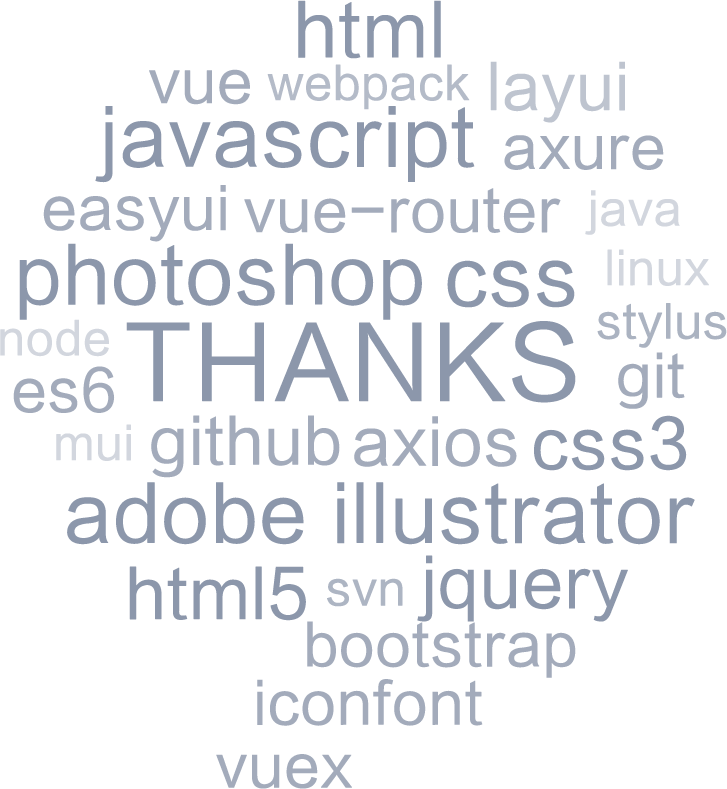

黄建展
前端开发工程师 / 深圳
基本信息
- 10k - 12k
- 24岁
- 广东 · 汕尾
联系方式
- 18899735694
- 18899735694
- jasonwongui@163.com
技能词云

教育经历
-
广州松田职业学院（大专） | 计算机应用技术软件开发专业
平均学分绩点 GPA 3.55/4.0 总成绩平均分 88.75
两年国家励志奖学金（全系唯一）
优秀毕业生
工作经历
-
东莞华南设计创新院广州研发中心 | Web 前端开发兼 UI 设计
- 参与消防地图指挥平台的前端和设计工作，完成网站前端框架从 EasyUI 到 Bootstrap 的迭代，使网站更符合用户审美。主要承担并独立完成后台管理系统、 警情预案系统、接出警系统的前端开发，及全套 UI 的设计。
- 用 Adobe Illustrator(AI)自制 iconfont 矢量图标库并更新项目图标，提高图标 的清晰度，拓展性和可维护性。
-
广州尚恩科技股份有限公司（实习）| Web 前端开发
- 参与开发广东省人大议案建议管理系统，实现议案建议无纸化提交，并亲临广 东省人大第十二届四次会议现场担任技术指导员。
- 根据产品需求，开发相应的 Web App，做到移动端正常显示。
- 负责政务网站顶图的 Flash 动画制作等。
个人项目
-
知乎专栏Web App Demo
- 项目描述：一直喜欢用知乎获取知识，但知乎专栏访问入口很深，于是自己重设 计并用 Vue 开发，设计和源码详见我站酷和 Github。
- 技术栈：vue-cli + vue-router + vuex + better-scroll + axios + stylus + iconfont
-
基于 vue 框架实现组件化 spa 单页面开发。
用 express 做代理，axios 获取和拼装知乎专栏数据。
用 Better-scroll 插件实现轮播图、页面滚动。
用 Stylus 及 CSS3 完成页面样式。
用 PS 绘制原型图、产出设计稿及作品展示稿。
通过 nginx 配置部署项目到云服务器发布上线。
-
消防可视化指挥平台
- 项目描述：该项目为东莞塘厦消防支队提供出警指挥、融合通讯及后台管理等功 能。使消防指挥可视化，办公无纸化，数据统一化，大大提高接出警和警情处理 速度。
- 技术栈：Bootstrap + jQuery + requirejs + easyUI + layUI插件 + iconfont
-
运用 HTML/CSS/Bootstrap 实现前端静态页面开发工作。
用jQuery做页面交互效果，Ajax实现前后台数据对接。
用Axure绘制低保真原型图，PS产出设计稿及用AI绘制矢量图标等。
运用 Ajax 实现前后端的数据对接。
使用layUI等其他第三方可拓展插件实现页面部分功能。
-
东江科技园小程序
- 项目描述：该项目是为惠州东江科技产业园制作的小程序信息发布平台，包括新闻发布、通知公告、园区介绍等功能。
- 技术栈：JavaScript + WXML + WXSS
-
操作小程序API对接和拼装数据，实现前后端分离。
运用 PS绘制小程序设计稿。
-
其他项目经验
- 项目描述：15年出来工作至今在公司参与过的其他项目。
- 技术栈：Bootstrap + jQuery + easyUI + OperaMasksUI 等。
- 佛山信盈企业策划OA、东江科技园小程序Web App、广州地方志OA、航桥国际物流管理系统、广东省人大议案建议管理系统等。
自我评价/期望
不 会 设 计 的 程 序 员 不 是 好 前 端 。 本 人 热 爱 编 程 和 设 计 ， 熟 练 掌 握 HTML/CSS/JS，熟练使用 PS/AI/Axure，能使用 Vue 框架、ES6、CSS 预 处理器等技术，完成 Web 端的开发和设计，希望找到一份 Web/Vue/微信小程 序等相关工作。目标是三年内成为全栈工程师。